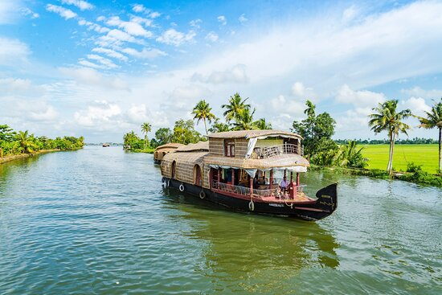

Andhra Pradesh-Tirupati Balaji Temple
Tirumala hills, group of 7 hills
adds to the
beauty.

Andhra Pradesh-Vishakhapatnam
Beach paradise of
Andhra Pradesh

Karnataka
Coorg-hill station,wildlife sanctuaries.
Nagarhole national park.
Karnataka
Hampi - temples, elephant
stables & other attractions.

Karnataka-Mysore, Mysore palace
Heart of the city,historical
palace,maginificent
architecture.

Tamil Nadu - Ooty,
in the Nilgiri hills,known for
tea plantations.

Tamil Nadu-Mahabalipuram beach
58km from Chennai.
Shore temple is nearby.

Tamil Nadu-Kanyakumari beach
one of the most pristine beaches.
Must visit.
Tamil Nadu-Thanumalayan Temple
Place of worship in Kanyakaumari.
Lord Shiva,Vishnu
& Brahma

Kerala - Munnar
Exotic hill station, breathtaking cliffs,
tea and spice
plantations.

Kerala - Alleppey backwaters
network of 1500 km of canals both
manmade and natural.

Kerala - Padmanabhaswamy Temple,
Thiruvananthapuram
Considered richest place of
worship.

Telangana-Papikondalu
Mountain range along Godavari river.
great scenic beauty.

Telangana-Bhadrachalam
Instances from Ramayana
vibrant river,glorious place.
Lakshadweep-Agatti, One of the
most beautiful lagoons in Lakshadweep
Situated in
coral attol.
Andaman and Nicobar islands
Port Blair - Cellular jail
It was a colonial prison.
Puducherry
Along Bay of Bengal, 1.2km stretch
Starts from war memorial.
Andaman and Nicobar islands
Havelock island for scuba diving
Rich marine life,
clear waters.